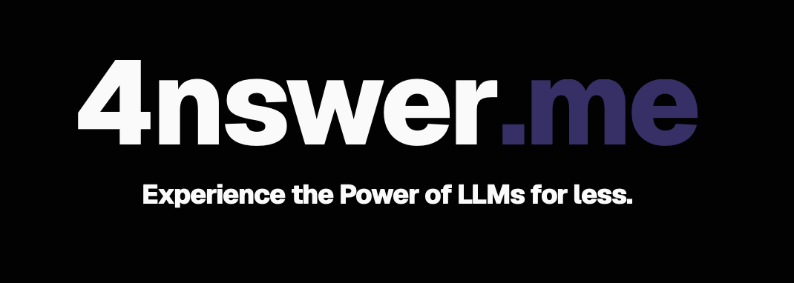

Project 03
4nswer.me

Overview
4nswer.me is a web-based, paid, multi-model LLM chat service. The project focused on frontend design and interface development for a modern AI chat product.
The frontend was built using Next.js, React, Vercel, TypeScript, and Tailwind CSS, with an emphasis on clean layout, responsive design, and a polished user experience.
Frontend Work
The project included designing user-facing pages, organizing reusable interface components, refining visual hierarchy, and supporting a smooth web application experience across screen sizes.
Screenshot of landing page
Screenshot of chat interface
Technical Focus
This project strengthened my experience with modern web development tools, component-based frontend design, deployment workflows, and styling systems.